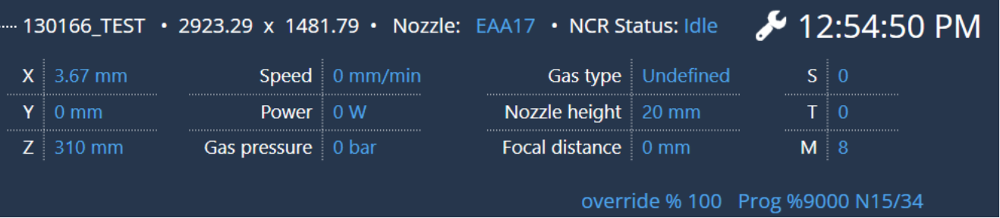
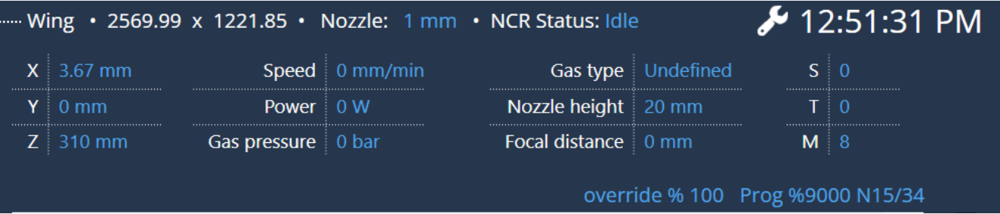

Ejecutar
Selector de programa
Seleccionar el programa y pulsar la tecla RUN lleva al usuario a la pestaña de ejecución. En la parte superior se muestran el nombre del programa, la dimensión, el estado NCR y los parámetros de láser (detalles de los ejes, velocidad, presión del gas, potencia, tipo de gas, altura de la boquilla, posición focal, sistema de coordenadas de trabajo actual, sistema de coordenadas del útil y función M utilizada).
-
Inicio : inicia el programa.
-
Pausa : pausa el programa. Esta opción solo está disponible cuando el usuario inicia el programa.
-
Continuar : continúa el programa en pausa.
-
Detener o cancelar : detiene el programa.
-
Editar : edita el programa. Navega a la página de edición del programa que se mencionó anteriormente.

El programa LST/diseño se muestra a continuación:

El programa DIN se muestra a continuación,

La mayor parte de la información se explica por sí misma. El parámetro en el lado derecho de la pantalla muestra la siguiente información:
S: offset de trabajo
T: valor de offset del útil
M: función M activa
En caso de que la programación offline genere un tiempo de ejecución del programa, se mostrará adicionalmente en la pantalla principal.

Tiempo de ejecución (NetProcessingTime).Tiempo estimado (consulte los datos de la programación offline).La información de tiempo se actualizará para el programa de señal activa actual. Una vez que se inicia un programa, comienza el cálculo del tiempo, que se reiniciará cuando se inicie un nuevo programa.
Override de velocidad
El usuario puede usar Override + y Override - para influir en la velocidad de los movimientos de los eje (en porcentaje).
-
Override + : aumentar el porcentaje de override para el eje configurado/establecido o la velocidad de la ruta. Por encima del 10%, el valor se cambia en incrementos del 10%, por debajo del 10% se cambia en incrementos del 1%.
-
Override - : reducir el porcentaje de override para el eje configurado/establecido o la velocidad de la ruta. Por encima del 10%, el valor se cambia en decrementos del 10%, por debajo del 10% se cambia en decrementos del 1%. El usuario también puede usar el deslizador para aumentar o reducir la velocidad.
El usuario puede navegar entre diferentes pestañas mientras la máquina está funcionando:
El usuario puede salir de la página Ejecutar incluso mientras la máquina está ocupada cortando la chapa. Esto es necesario porque, mientras se está ejecutando un programa, es posible que el operador desee preparar el siguiente conjunto de programas (editar el programa, cambiar los parámetros del láser, etc.) para la producción. Además, cuando el usuario cambia de pestaña mientras el programa se está ejecutando, se muestra un mini reproductor para que pueda conocer el estado actual del programa que se está cortando, sin tener que desplazarse a la pestaña Ejecutar.

Visualización
El usuario puede activar o desactivar la visualización de la chapa, la máquina y el desplazamiento transversal en el dibujo.
Los mensajes estáticos del PLC se muestran en la esquina inferior izquierda de la página EJECUTAR.
Estado
El usuario puede comprobar la información del programa y el estado de la máquina. Es de tipo solo lectura.

Controles de programa
El usuario puede controlar el programa seleccionando la opción deseada cuando el programa se encuentra en estado de EJECUCIÓN. Las opciones seleccionadas en los controles del programa se mostrarán en la esquina inferior izquierda.

En el programa DIN, se mostrarán todas las opciones en los controles del programa.
En el programa LST/FXLYT, solo se mostrarán tres opciones: